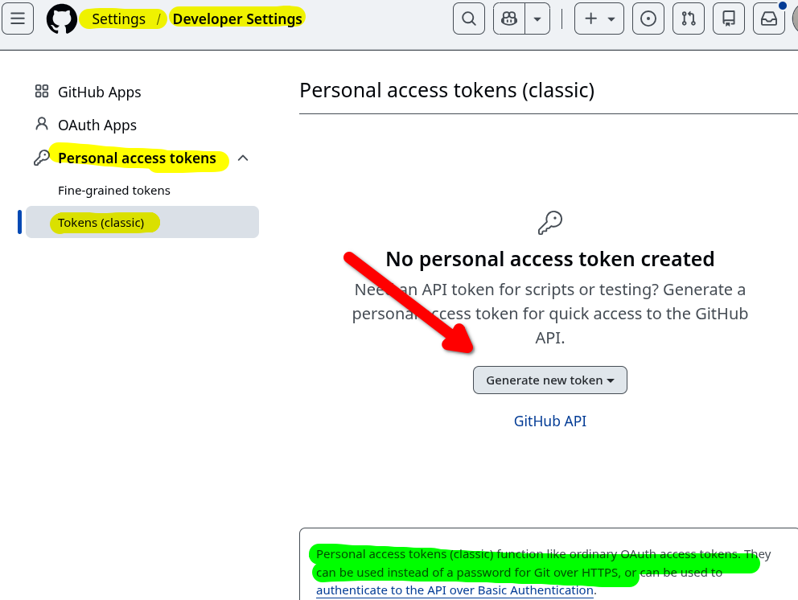
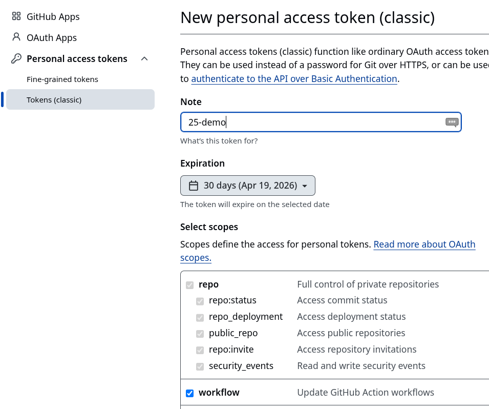
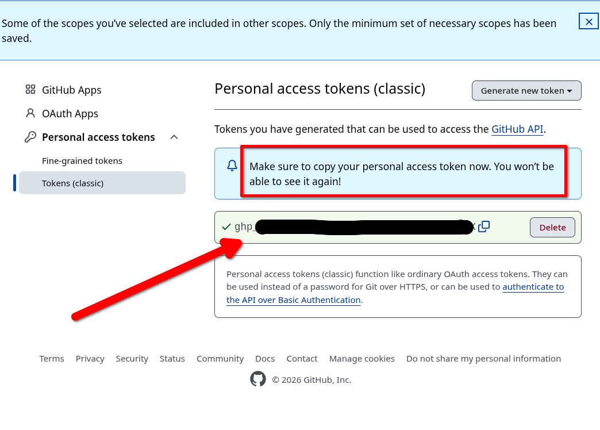

Acceso con token (PAT)¶
En algunos casos es posible que no tenga acceso por SSH. En esa situación no podrá usar certificados SSH.
En su lugar puede usar el acceso a GitHub usando HTTP e identificandose con:
- su usuario
- y un Personal Acces Token (PAT), qeu sustituye a la contraseña.
Tenga en cuenta que al clonar el repositorio debe usar la opción HTTPS, donde la URL tiene un formato similar a https://github.com/user/nombrerepo.git.
1. Creación¶
El PAT se crea a en los Settings del usuario, Developer Settings y puede usar el tipo Tokens (classic).

En los scopes y para el uso en estos ejemplos basta activar repo y workflow (en realidad workflow incluye repo).

Ya sólo queda anotar y usar el PAT como clave cuando la solicite.

2. Uso de helpers¶
Para no tener que estar copiando y pegando el valor del PAT se usa el comando
git config --global credential.helper 'cache --timeout=segundos'
Este comando permite no tener que estar escribiendo ni el nombre de usuario y contraseña (o token) cada vez que hace un git push o git pull, pero sin dejar sus claves grabadas en el disco duro.
Básicamente guarda las credenciales en la memoria RAM por un rato y luego las olvída". El tiempo por defecto son 900 segundos (15 minutos)
Por ejemplo si quiere que recuerde por una hora (3600 segundos), el comando sería:
git config --global credential.helper 'cache --timeout=3600'
El flag
--globales para que se aplique a todos sus repositorios y no solo al que tenga abierto en la terminal.
Otra opción es almacenar en el disco duro de forma permanente usando como helper store en vez de cache:
git config --global credential.helper store
En ese caso las credenciales se almacenan en texto plano en el fichero ~/.git-credentials.
3. SSH: acceder sin frase de paso¶
Se puede añadir la frase de paso SSH al agente SSH para que no la pida reiteradamente. Para ello:
-
Primero compruebe si está iniciado el agente ssh con el comando
ssh-add -lalu@tos:~$ ssh-add -l Could not open a connection to your authentication agent. alu@tos:~$ -
Si indica que no puede abrir la conexión es necesario iniciar el agente SSH. Si no puede pasar al paso 3.
alu@tos:~$ eval `ssh-agent -s` Agent pid 916589 alu@tos:~$ ssh-add -l The agent has no identities. alu@tos:~$ -
Añadir la clave con
ssh-add -t <time> <file>(si se omite-t timese añade de forma permanente). Si se omitefiletoma la clave por defecto. Puede comprobar que se ha añadido conssh-add -l:alu@tos:~$ ssh-add -t 2h Enter passphrase for /home/alu/.ssh/id_ed25519: Identity added: /home/alu/.ssh/id_ed25519 (clases.alu+01@gmail.com) Lifetime set to 7200 seconds alu@tos:~$ ssh-add -l 256 SHA256:W9Ka18JIVwQfuC68EUUplwpv7acGwroNdzucFnG4wr4 clases.alu+01@gmail.com (ED25519) alu@tos:~$
Ya puede usar la clave SSH durante ese periodo sin introducir la frase de paso. Se pueden borrar las claves del agente con ssh-add -D.